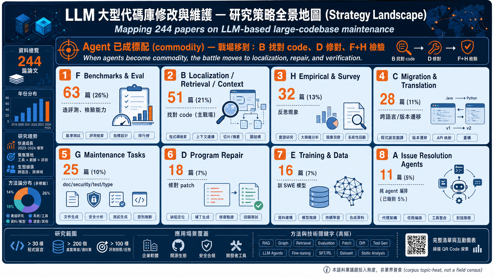
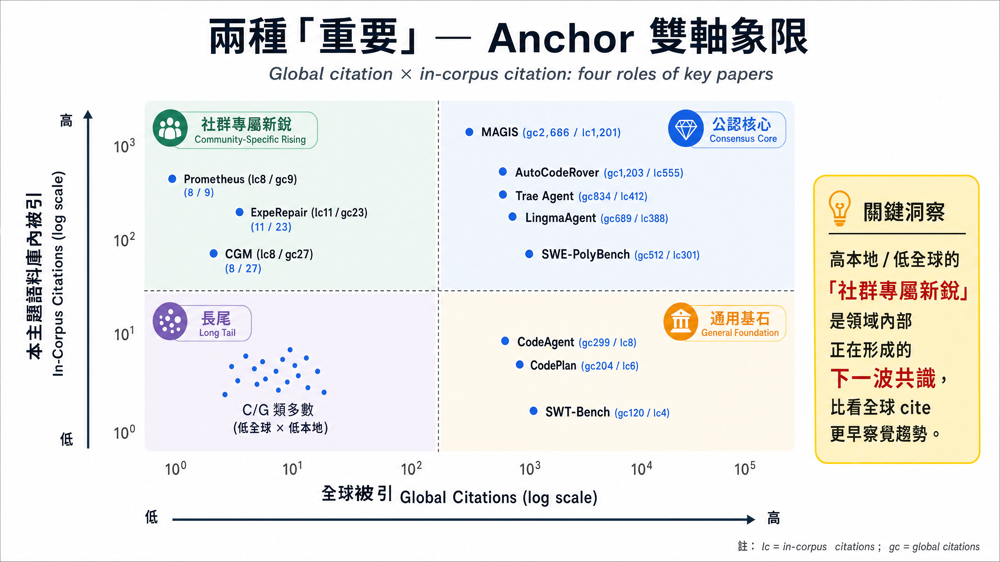
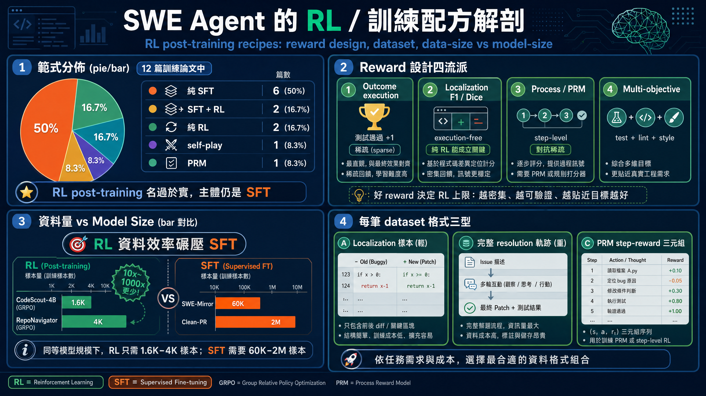
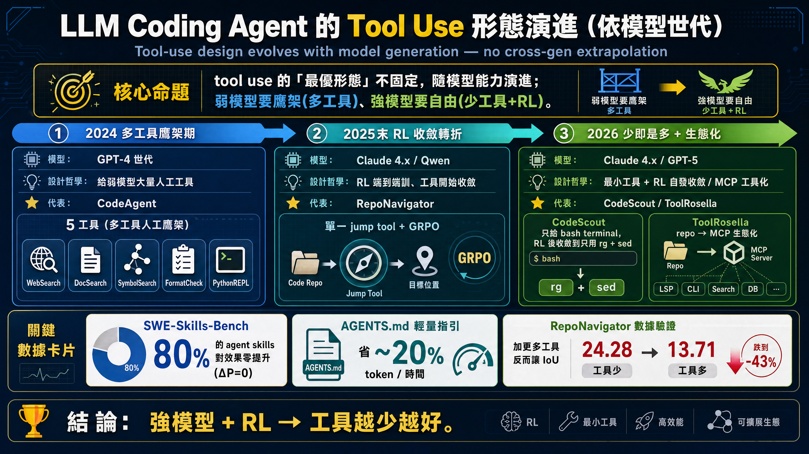

資訊密集、8類齊全、中文正確、數字全對

gpt-image-2：不裁切、版面清爽(編號1-8)、數字全對 — 已追平 Gemini
Gemini：公認核心 gc 捏造(MAGIS畫850實158)

gpt-image-2：仍捏造(MAGIS畫gc2686實158) — 精確數據生成式天生做不到
四區塊完整、餅圖/資料量數字全對

gpt-image-2：深色版、餅圖6/2/2/1/1、資料量1.6K/4K/60K/2M 全對
時間軸三期完整、數據callout全對

gpt-image-2：不裁切、80%/~20%/24.28→13.71 全對